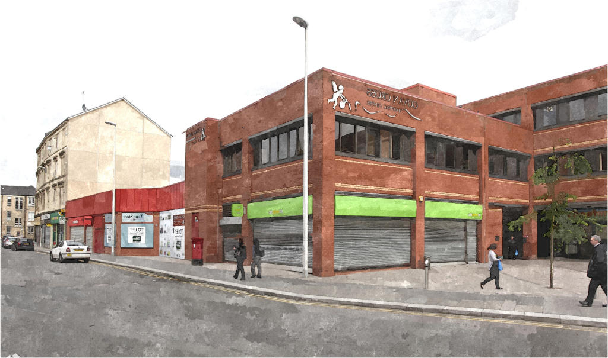

The Govan of Tomorrow
By introducing new methods of recycling to Govan, they can lead to a better future for the town by using the recycled materials to invent new technologies that can better people`s lives. Recycling also helps preserve the environment for the future generations. Using recycled materials, new houses can be built, utensils can be made for households, furniture can be made as well. With so many possibilities new businesses and factories can be opened in the town to make its economy rise once again and help its people imporve their lives even more.
